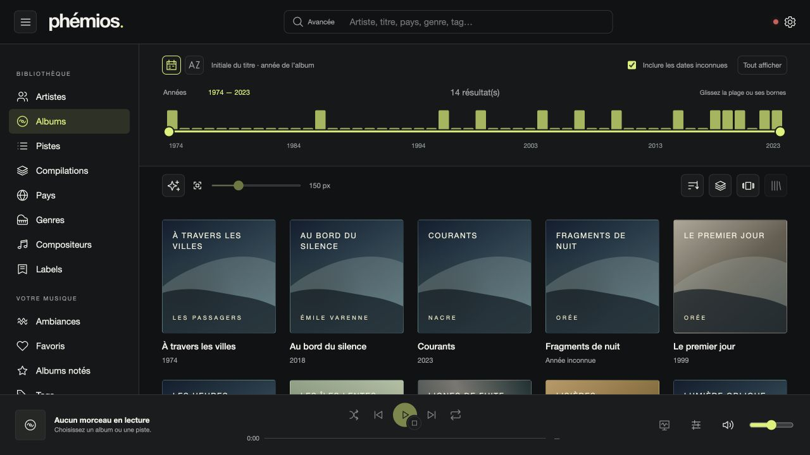
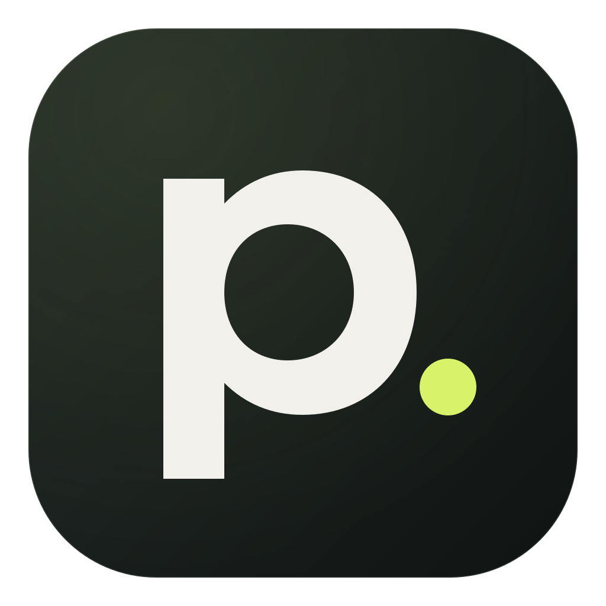
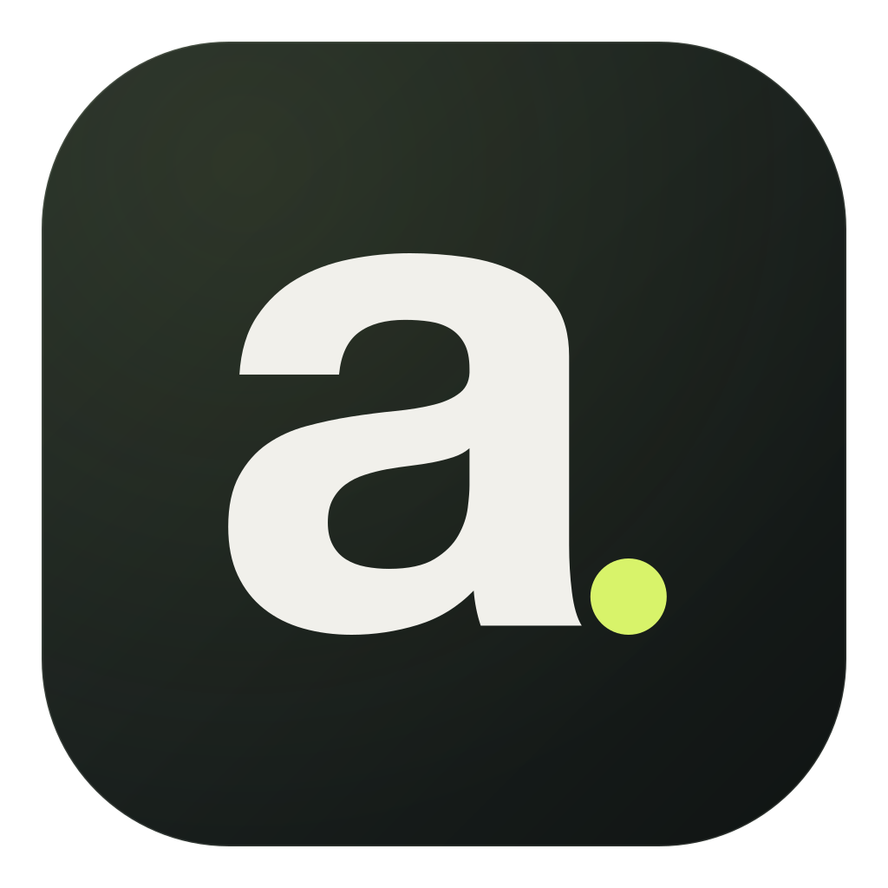

A collection worth looking at
Grid, list or Cover Flow. Adjustable artwork, artist cards and previously retrieved images kept in cache.
YOUR MUSIC, IN FULL VIEW
Enjoy choosing a record again. Browse its artwork, follow the musicians who catch your attention and let lyrics join the listening experience. Your collection still has plenty to tell you.
Local, server, or both.A desktop application. Your own collection.

01 / FIND
Remember a cover, a year or a sound? Enter your collection through the route that feels right.
Grid, list or Cover Flow. Adjustable artwork, artist cards and previously retrieved images kept in cache.
Years, alphabet, countries on a globe, genres, composers or labels: follow your interests, then refine with advanced search.
Ratings, favourites, tags and personal notes. Turn a selection into a dynamic collection that evolves with your catalogue.
02 / DISCOVER
A guest musician. Another band. A record you had forgotten. Credits become routes to take your discovery further.
MUSIC HAS A FACE, TOO
Portraits, banners, logos and backgrounds give artists a presence. Read a biography, open its longer version and explore a discography without leaving your music.
Explore artist pages →Request artwork and metadata retrieval explicitly through Aède. Availability and keys depend on providers.
03 / LISTEN
Build a queue, press play and stay with the track. The waveform guides you; Playback view makes room for words and visuals.
Append a track, album or collection. Reorder, sort and remove entries to build your listening session.
Synchronized lyrics when available, manual navigation for untimed text, or a floating-lyrics scene.
Audio output, volume, repeat, shuffle and DSP crossfade. Find your radio stations, podcasts and audio CDs too.
Choose colours, cover size, menus and shortcuts. Export preferences to keep your bearings. Even on a shared catalogue, your annotations stay personal.
Personalize Phémios →ONE FAMILY
Each tool has its role. Keep a simple journey in Phémios, with the right explanations a click away.

Explore & listenYour collection, musical connections, lyrics and an interface that adapts to you.
Read the manual ↗
Organize & serveThe bundled or remote engine: catalogue, files, enrichment, accounts and playback rules.
Understand Aède ↗Audio analysis and its explanations. Find available results inside Phémios.
Understand analyses ↗No. Phémios bundles a local engine for your folders. You can also connect an Aède server or use both together.
Browsing, annotations and enrichment rewrite neither your tracks nor their tags. Copy and conversion operations use an explicitly chosen destination.
Yes: radio stations, RSS podcast subscriptions and audio CDs. Supported CUE image formats, required tools and hardware limits are explained in the manual.
Download the installer for your system from the GitHub releases. The manual explains installation and first launch. Storybook lets you use components with fictional data without installing the App.
FIND YOUR BEARINGS
Start with a folder. Discover what your collection has to tell you.
Screenshots use fictional data; some native actions remain disabled in these previews. The manual explains installation and first launch.
For curious minds: user manual, Storybook, Rustdoc and TypeScript contracts in the footer.